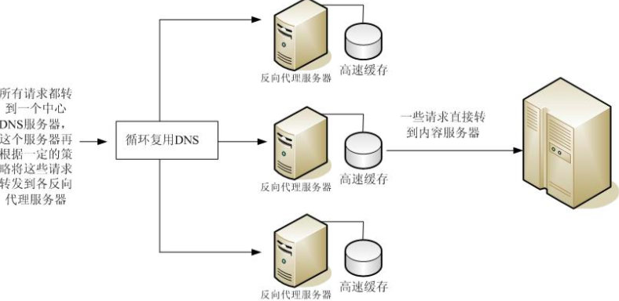
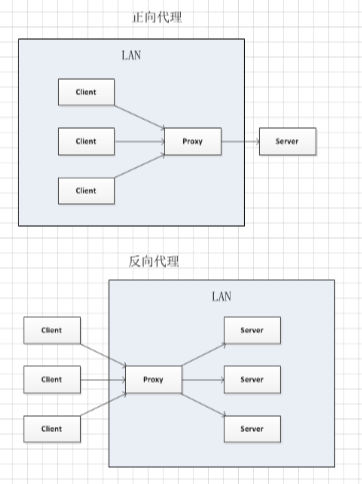

# Nginx 负载均衡配置
负载均衡是后端常见的部署方式，通过创建后端集群，分担每一台服务器的压力，能够实现大量请求的处理，即使某一台服务器挂掉，对整个应用也不会造成太大的影响。
- 负载均衡定义
- 反向代理定义
- 反向代理实战
# 负载均衡定义
负载平衡（Load balancing）是一种计算机技术，用来在多个计算机（计算机集群）、网络连接、CPU、磁盘驱动器或其他资源中分配负载，以达到最优化资源使用、最大化吞吐率、最小化响应时间、同时避免过载的目的。 使用带有负载平衡的多个服务器组件，取代单一的组件，可以通过冗余提高可靠性。负载平衡服务通常是由专用软件和硬件来完成。 主要作用是将大量作业合理地分摊到多个操作单元上进行执行，用于解决互联网架构中的高并发和高可用的问题。
负载均衡示意图：

# 反向代理定义
反向代理在计算机网络中是代理服务器的一种。用户不直接请求服务器，而是请求反向代理服务器，再由反向代理服务器转发请求到其他服务器。客户端只知道反向代理的 IP 地址，而不知道在代理服务器后面的服务器集群的存在。反向代理是实现负载均衡的一种方式。
反向代理示意图：

反向代理的作用：
- 复用 DNS 查询。
- 加密和 SSL 加速。
- 负载均衡。
- 缓存静态资源。
- 压缩。
- 减速上传。
- 安全。
- 外网发布。
反向代理和正向代理
- 正向代理，服务器端无感知，因为服务器始终只和代理服务器通信，并不知道代理服务器还会向其他端转发信息。
- 反向代理，客户端无感知，因为客户端始终只和代理服务器通信，并不知道代理服务器还会将请求转发到其他的服务器。
# 反向代理实战
接下来我们使用 nginx 配置一个反向代理。
worker_processes 4;
events{
worker_connections 1024;
}
http{
# 定义负载均衡设备的 ip 及设备状态
upstream firsttest {
ip_hash; # 可选。每个请求按访问 ip 的 hash 结果分配，这样每个访客固定访问一个后端服务器，可以解决 session 的问题。
server 111.13.103.91 weight=3; # 设置权重为3，他被请求的概率是 3 / 4 = 75%。
server 111.13.179.222;
server 111.13.179.333 down; # 表示当前的 server 暂时不参与负载。
server 111.13.179.444 backup; # 其它所有的非 backup 机器 down 或者忙的时候，才会被请求。
server 111.13.179.555;
}
server{
listen 8080;
# 匹配根路由，然后代理到 firsttest 网络上。
location / {
proxy_pass http://firsttest;
}
}
}
1
2
3
4
5
6
7
8
9
10
11
12
13
14
15
16
17
18
19
20
21
22
2
3
4
5
6
7
8
9
10
11
12
13
14
15
16
17
18
19
20
21
22